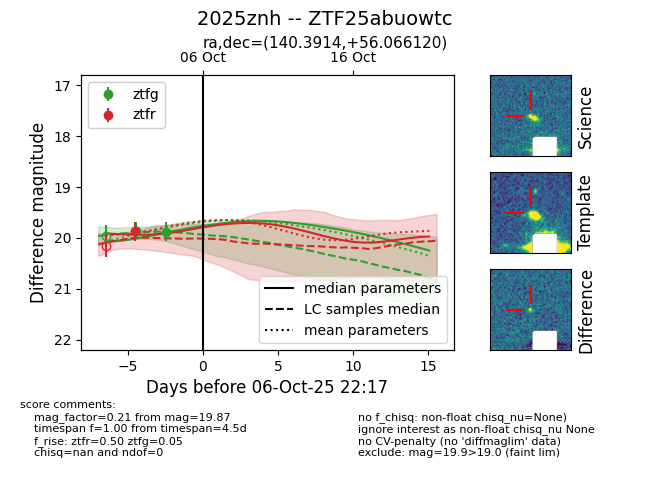
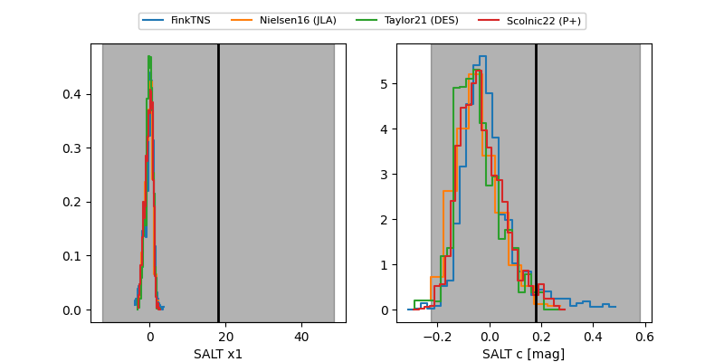

FINK: ZTF25abuowtc
Lasair: ZTF25abuowtc
ALeRCE: ZTF25abuowtc
TNS: 2025znh
YSE: 2025znh
ZTF25abuowtc (ztf,fink)
2025znh (tns,yse)
equatorial (ra, dec) = (140.3914,+56.06612)
galactic (l, b) = (160.1265,+42.92088)


last ztfg=19.87, ztfr=19.87
2 ztfg, 1 ztfr detections